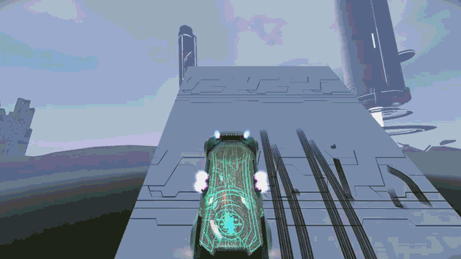
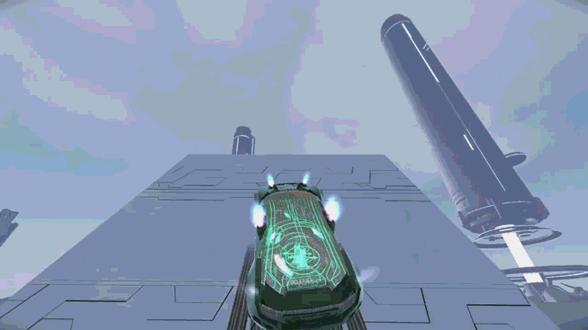
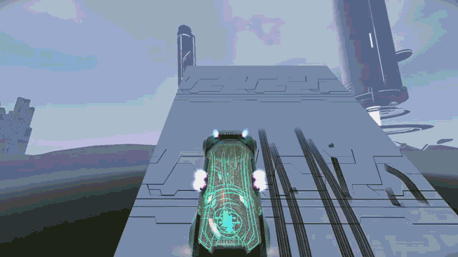
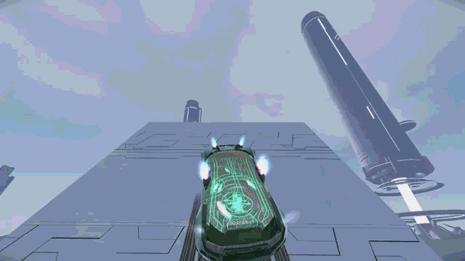

A Guide To Most Distance Mechanics
> Advantage Of Backwards Gripfly
Aw yeah. Backwards gripfly is awesome. You can only really do it effectively while you are not boosting, and thus is mostly helpful in circumstances in which boost isn't enabled. The motion involves tilting backwards in the air and activating grip, like so:

This is different than doing the normal gripfly motion:

The advantage of backwards gripfly is that, in cases where you are jumping off of a slope, if the slope is steep enough, backwards gripfly will fly you faster and make you go farther than if you were to do the regular gripfly motion. The steeper the slope, the better it works. One place you can do this to get a little extra speed is at the start of NWBO 4, like this:

Additionally, If wings are enabled, you can do it without a slope by jumping, using wings to turn up so that you are angled back, then deactivating wings, and then gripping up. Like so:

The advantage of doing this is that it is a better way of gaining height with these abilities enabled, and it is faster overall, compared to doing this:

It works better the more height you need to gain, and also if landing becomes easier from a backwards gripfly position. So far, I have only seen this prove helpful in the blue section of 'Nonsense 5' by Backgrounds', but it is significant enough a strat in its own right to document.

This is different than doing the normal gripfly motion:

The advantage of backwards gripfly is that, in cases where you are jumping off of a slope, if the slope is steep enough, backwards gripfly will fly you faster and make you go farther than if you were to do the regular gripfly motion. The steeper the slope, the better it works. One place you can do this to get a little extra speed is at the start of NWBO 4, like this:
Additionally, If wings are enabled, you can do it without a slope by jumping, using wings to turn up so that you are angled back, then deactivating wings, and then gripping up. Like so:
The advantage of doing this is that it is a better way of gaining height with these abilities enabled, and it is faster overall, compared to doing this:
It works better the more height you need to gain, and also if landing becomes easier from a backwards gripfly position. So far, I have only seen this prove helpful in the blue section of 'Nonsense 5' by Backgrounds', but it is significant enough a strat in its own right to document.
<< < 10 > >>
1 2 3 4 5 6 7 8 9 10 11 12
1 2 3 4 5 6 7 8 9 10 11 12
• Tricks • Turning In Midair With Gripfly • Slightly Faster Wing Turning • Differences in Forward Gripfly and Frontward Gripfly • Throttling Boost When Going Up Then Forward • Advantage Of Slow Falling Before Going Up • Wings To Make Higher Jumps • Air Drift • Vertical Gripfly Interaction With Force Zone • Advantage Of Backwards Gripfly • Rotational Alignment Through Rotating In One Direction • Cooldown Through Thruster/Grip Tapping •